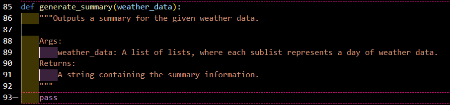

Starter Code
Nine empty functions were provided with a docstring describing the required program to be developed.

The goal of this project was to process and convert csv files into meaningful text-based summaries using Python. Using Object Oriented Programming I developed nine user defined functions to complete this task. Each function's output also passed the associated unit tests.
Nine empty functions were provided with a docstring describing the required program to be developed.
A unit test for each function was provided, to enable efficient and comprehensive testing for our program.
Expected output text summaries were provided, to assist in shaping the return statement for each function.
I created a code "playground" for each function, to provide an isolated environment to test and refactor each function. Click the image to view the function playgrounds on GitHub.
Once functions passed the associated tests within the function playground, the code was transferred to the main weather.py program. Click the image to view the final weather.py file.
Each function was run within the weather.py program to confirm alignment with expected output.
Finally, the weather.py program and all nine functions were tested using the run_tests.py program. Click the image to view the run-tests.py script.